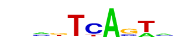

| p-value: | 1e-263 |
| log p-value: | -6.071e+02 |
| Information Content per bp: | 1.634 |
| Number of Target Sequences with motif | 3635.0 |
| Percentage of Target Sequences with motif | 23.87% |
| Number of Background Sequences with motif | 4490.6 |
| Percentage of Background Sequences with motif | 13.42% |
| Average Position of motif in Targets | 53.5 +/- 20.9bp |
| Average Position of motif in Background | 50.8 +/- 34.9bp |
| Strand Bias (log2 ratio + to - strand density) | 1.4 |
| Multiplicity (# of sites on avg that occur together) | 1.13 |
| Motif File: | file (matrix) reverse opposite |
| Rank | Match Score | Redundant Motif | P-value | log P-value | % of Targets | % of Background | Motif file |
| 1 | 0.947 | 1e-259 | -597.619936 | 21.57% | 11.70% | motif file (matrix) | |
| 2 | 0.931 | 1e-258 | -594.724307 | 25.78% | 15.02% | motif file (matrix) | |
| 3 | 0.838 | 1e-211 | -488.050344 | 39.69% | 27.98% | motif file (matrix) | |
| 4 | 0.826 |  | 1e-139 | -322.274895 | 31.27% | 22.40% | motif file (matrix) |
| 5 | 0.835 | 1e-139 | -321.163361 | 38.21% | 28.72% | motif file (matrix) | |
| 6 | 0.603 | 1e-72 | -167.066163 | 10.45% | 6.54% | motif file (matrix) | |
| 7 | 0.603 | 1e-40 | -94.317875 | 1.08% | 0.31% | motif file (matrix) | |
| 8 | 0.602 | 1e-13 | -30.450156 | 0.18% | 0.03% | motif file (matrix) | |
| 9 | 0.625 | 1e-10 | -24.207727 | 0.17% | 0.04% | motif file (matrix) | |
| 10 | 0.745 | 1e-9 | -22.280474 | 0.28% | 0.09% | motif file (matrix) |